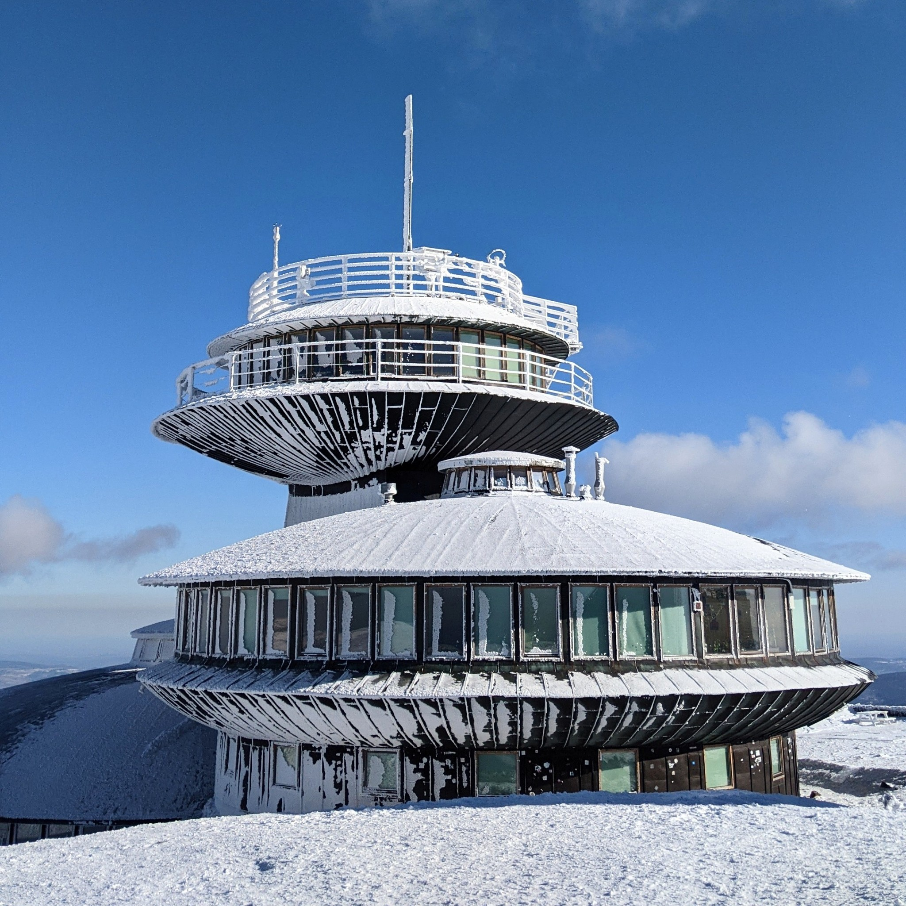

Прогноз погоды составляют на основе данных, полученных метеорологами о состоянии нижних слоев атмосферы.
Для получении таких данных используются метеорологические станции и метеорологические спутники.

На метеорологических станциях с помощью специальных приборов измеряют количество осадков, силу и направление ветра, типы облаков, давление и влажность воздуха.
Метеорологические спутники передают снимки планеты, на которых фиксируется передвижение воздушных масс. Также спутники оснащены датчиками изменения температур.
Данные, полученные с метеостанций и спутников собираются и на их основе составляются синоптические карты, фиксирующие состояние атмосферы.
На основе этих карт и делаются прогнозы об изменениях погодных условий.
Наибольшей точностью отличаются прогнозы, предсказывающие изменения погоды в течении часа-двух. Точность прогнозирования снижается, если надо предсказать погоду на более долгий срок.